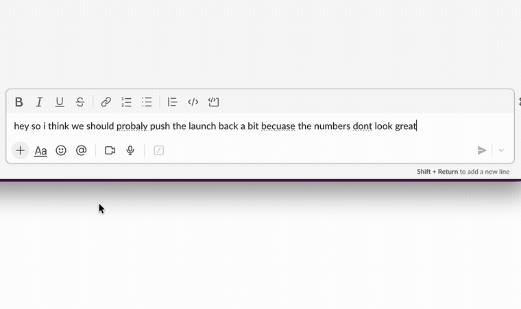

Open source · Local AI · Built for macOS
Rewrite selected text across your Mac.
Select a sentence in an editor, a browser, or a message, press ⌥R, and Everest streams a clearer version into a floating panel and puts it back in place. The language model runs on your Mac, so your selection and the rewrite are not sent to an AI server.
Download developer preview View source on GitHub
Developer preview for Apple-silicon Macs running macOS 26 or later. This build is signed but not notarised, so the first launch needs Apple's Open Anyway step. Everest downloads a local model of about 2.3 GB during setup. Read the install steps · All releases and checksums

- Local inferenceThe model runs on your Mac with MLX.
- MIT licensedSource, issues, and releases are public.
- Apple siliconmacOS 26 or later.
- Offline after setupRewriting works with networking switched off.
Three steps, wherever you write.
-
Select text
Highlight a sentence or a paragraph in the app you are already typing in. Nothing to switch to, nothing to paste into.
-
Press ⌥R
Everest captures the selection and streams a local rewrite into a small floating panel. Esc cancels it mid-flight.
-
Keep writing
Everest replaces the selection once it has re-verified the target. Where it cannot, it holds the rewrite in the panel for you to copy.
See where it replaces in place and where it hands you the clipboard
What you get.
-
Local by design
The rewrite model runs with MLX on your Mac. Your selection and the generated text are not uploaded to an AI service, and there is no account and no telemetry.
-
Across the apps you use
One global shortcut in Slack, Linear, Google Docs, ChatGPT, VS Code, Sublime Text, Mail, Notes and ordinary macOS text fields. Terminals and PDFs get an honest fallback instead of a silent failure.
-
Streaming preview
The answer forms in a lightweight floating panel while it generates, and Esc cancels the rewrite before anything is written.
-
Choose a style
Proofread, Professional, Friendly, Concise, Expand, and Simplify ship with the app. Every instruction is editable in Settings, and you can add your own.
-
Your shortcuts
Start with ⌥R and ⌥⇧R, or record bindings that suit you. Everest tells you which character a binding costs.
-
Open and inspectable
Everest is MIT licensed Swift. Read the prompts, read the clipboard handling, file an issue, or send a pull request.
Designed to be useful, and honest when it cannot replace safely.
Reading a selection works in nearly everything. Writing one back does not, because some apps have no editable buffer to write into. Everest tells you which case you are in instead of doing nothing.
Normally replaces in place
- Native macOS text fields
- Browser text areas and rich-text editors
- Code and text editors, including VS Code, Cursor, Sublime Text, and Xcode
- Chat and mail apps, including Slack, Discord, Mail, and Messages
- Web apps that own their own editor, such as Linear, ChatGPT, and Google Chat
- Apps that expose nothing usable to Accessibility, such as Sublime Text and Google Docs, through a verified paste
Hands you the rewrite to paste
- Terminals, where a paste lands at a live prompt rather than replacing a selection
- PDFs and ordinary web prose, which take no paste at all
- Anything Everest cannot re-verify as the same target after generation
Verified by hand in Sublime Text, Linear, ChatGPT, Google Chat and Google Docs. Everything else follows the two rules above rather than a per-app list, because a support matrix is only worth publishing once each app on it has actually been tried. App behaviour varies by version and by editor. When Everest cannot verify an automatic replacement, holding the rewrite in the panel is the safe result, not a failed generation. Password and secure fields are refused before they are read; see Privacy. Found an app that behaves badly? Open an issue.
Your writing is processed on your Mac.
What does not leave
The model runs locally. Your selections and your rewrites are not uploaded, and there is no account, no telemetry, no crash reporting, and no analytics. Once the model is on disk, rewriting works with networking switched off.
What does
Two requests, neither carrying your text. The first setup downloads model weights from Hugging Face at a pinned revision. Update checks ask GitHub whether a newer version exists, and that request discloses ordinary HTTP metadata: your IP address, the app version, and your macOS version.
The clipboard, which is the real exception
Where macOS will not hand over a selection, such as terminals, PDFs, Google Docs and Sublime Text, Everest reads it with a synthetic ⌘C and pastes rewrites back the same way. Anything on the general clipboard is eligible for Handoff, so with Handoff on, macOS may sync it to your own devices for a couple of minutes. That sync is between your devices and encrypted, and no app can opt out of it. Turn Handoff off in System Settings ▸ General if you would rather it did not happen.
Password fields
Everest checks the secure-field subrole before reading and the secure-input flag again immediately before any synthetic copy. Both checks need the app to expose something, and an app that exposes neither is a case this chain has no way to see. Those are what the exclusion list in Settings ▸ Privacy is for.
Install the developer preview.
-
Download
Everest.dmg, or pick a specific build from Releases. - Open the disk image and drag Everest to Applications.
- Open Everest. macOS will say it could not verify Everest is free of malware. Click Done.
- Open System Settings ▸ Privacy & Security, scroll to Security, and click Open Anyway next to Everest. Since macOS 15 that pane is the only route; right-click ▸ Open no longer works.
- Grant Accessibility access when Everest guides you there.
- Let Everest download the default local model, about 2.3 GB. It is not bundled in the app.
Why Open Anyway?
This build is signed but not notarised, and notarisation requires Apple's paid Developer Program. The source and the checksums are public, but macOS still blocks the first launch until you approve it by hand. Once a notarised build ships, this step goes away.
On a managed or work Mac
IT policy often removes the Open Anyway button. If it is not there, clear the download flag from Terminal instead:
xattr -dr com.apple.quarantine /Applications/Everest.appThat is not a way around the signature check. The app is signed either way; this removes the "downloaded from the internet" marker that triggers the block.
Shortcuts and included styles.
Keys
| Shortcut | Action |
|---|---|
| ⌥R | Quick Improve. One prompt, one rewrite. |
| ⌥⇧R | Choose a style, then rewrite. |
| Esc | Cancel a rewrite that is still generating. |
| ⌘Z | Undo the replacement, in the app's own undo stack. |
Both global shortcuts are configurable in Settings ▸ General. Every printable binding costs you a character, and Everest tells you which one. It also cautions against the dead keys ⌥I ⌥E ⌥U ⌥N, because binding one of those breaks accented typing everywhere.
Styles
- Proofreadcorrections only
- Professionalpolished and confident
- Friendlywarm and natural
- Conciseshorter and more direct
- Expandclarify and develop
- Simplifyplain and readable
Each instruction is editable in Settings ▸ Styles, and you can add your own. The prompt-injection frame around them is not editable, on purpose. Read the shipped prompts.
Local inference on modern Macs.
Requirements
- macOS 26 or later
- An Apple-silicon Mac
- About 2.3 GB of free space for the default model, which is stored outside the app
- A network connection for the first model download and for update checks. Rewriting itself works offline.
Models
- Qwen3-4B-Instruct-2507, 4-bit, through MLX. The default, about 2.3 GB.
- Qwen3-30B-A3B-Instruct-2507, 4-bit. Higher quality, about 17.2 GB, offered only on Macs with the memory to hold it.
- Apple Intelligence. Zero download, on-device, and available only where the system offers it. Its guardrails can cut off ordinary text mid-sentence.
Model weights are downloaded from Hugging Face at a pinned commit, never a branch, and they carry their own Apache-2.0 licence. They are not bundled with Everest and are not covered by its MIT licence. A local model can still produce wrong text, so review changes that matter and use ⌘Z when you need to.
Built in the open.
Everest is an MIT-licensed Swift app. The source, the issue tracker, the release history, the privacy policy, the security policy, and the contribution guide are all public on GitHub.
Questions.
Is Everest free?
Yes. Everest is free and open source under the MIT licence. There is no trial, no subscription, and no upsell inside the app.
Does my text leave my Mac?
Your selections and your rewrites are not uploaded. Model downloads contact Hugging Face, and update checks contact GitHub; neither request carries your text. The clipboard fallback is the one real exception, because anything on the general clipboard is eligible for Handoff and for clipboard-history apps. The privacy policy is the full account.
Why does Everest need Accessibility permission?
It is how macOS lets one app read the focused selection in another app and write a replacement back. macOS has no narrower permission for this, and it is also why Everest cannot be sandboxed or sold on the Mac App Store. Without it, Everest cannot do the one thing it is for.
Why does macOS block the first launch?
This build is signed but not notarised, and notarisation requires Apple's paid Developer Program. Follow the Open Anyway steps once and every later launch is normal. A notarised build would remove the step.
Does it work in terminals and PDFs?
It reads the selection there, but it does not paste into them. A paste in a terminal lands at the live prompt rather than replacing a selection, and a PDF has no editable buffer at all. In both cases Everest keeps the rewrite in the panel and says so, so you can paste it where you want it.
Does it read password fields?
Everest refuses the secure fields and secure-input states it can recognise, checked once before reading and again immediately before any synthetic copy. Both checks need the app to expose something, and an app exposing neither is a case the checks cannot see, so you can exclude any app you would rather Everest never inspected in Settings ▸ Privacy.
Does it work offline?
Rewriting does, once the model is on disk. Installing the model and checking for updates need a network connection.
How are updates delivered?
Automatic update checks are on by default, because a build that is not notarised can only be corrected by an update that actually reaches people. The switch is in Settings ▸ Privacy ▸ Software updates, and Check for Updates… in the menu-bar menu keeps working whichever way you set it. Updates come from Sparkle and a signed feed in the repository; every build is signed with an EdDSA key, and Sparkle refuses an update whose signature does not verify. Version 0.1.0 predates the updater and has to be updated by hand once.
How do I uninstall it?
Quit Everest and move it from Applications to the Trash. Then delete the model directory and the preferences file, and remove Everest from System Settings ▸ Privacy & Security ▸ Accessibility. The privacy policy lists the exact paths.
Does it support Intel Macs?
No. Everest is an Apple-silicon app, and the local model runs through MLX, which targets Apple silicon.
Improve the sentence without sending it away.
Download developer preview View source on GitHub
Developer preview for Apple-silicon Macs running macOS 26 or later. This build is signed but not notarised, so the first launch needs Apple's Open Anyway step. Everest downloads a local model of about 2.3 GB during setup. All releases and checksums